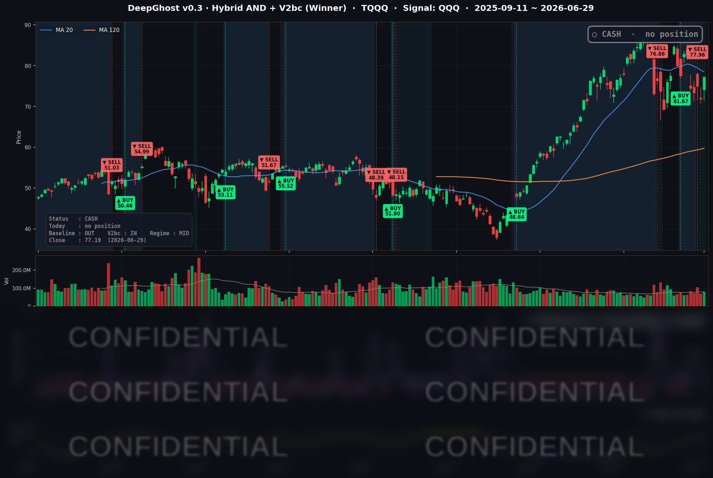

전쟁으로 인한 유가 이슈 + AI 버블 논란 + 메모리 반도체 과열/폭등 세가지 이슈가 잦아 드는 것 같습니다. 큰 이슈로 인한 변동성 급등/주가 하락이 지나면 골디락스 장세가 나올 수 있습니다. 그 초입에 Ghost.AI가 매수 시그널을 줄 것입니다.
📊 오늘의 매매 신호
| 항목 | 내용 |
|---|---|
| 오늘 할 일 | ✅ 아무것도 안 해도 됩니다 |
| 포지션 상태 | 💵 현금 보유 중 (OUT OF POSITION) |
| 현금 보유 기간 | 2026-06-25 ~ 2026-06-29 (3일) |
| TQQQ 종가 | $77.19 (+7.46%) |
6/25 시초가에 TQQQ를 정리해 현금으로 전환한 뒤, 새로운 매수·매도 신호 없이 관망을 이어가고 있습니다. 오늘은 시장이 크게 올랐지만 모델은 추격하지 않았습니다.
TQQQ 시그널 — OUT OF POSITION
현재 상태: 현금 보유 중 | 신규 매수·매도 신호 없음

오늘 나스닥은 +2.07%, TQQQ는 하루에 +7.46%나 뛰었습니다. 현금을 들고 있던 입장에서는 "이 상승을 놓친 것 아니냐"는 아쉬움이 들 수 있는 날입니다.
하지만 모델의 답은 분명합니다. 시그널은 가격을 추격하지 않습니다. 모델 내부적으로는 오늘의 급등을 오히려 '기회의 신호'로 더 강하게 받아들이고 있다는 것입니다. 다만 한 번 더 확인하는 규율(추세가 진짜인지 며칠에 걸쳐 검증하는 절차)을 지키며 대기하는 중입니다. 즉 "지금 안 사는 것"이 아니라 "정확한 타이밍을 확인하는 중"입니다.
레버리지는 오르는 날엔 3배로 달콤하지만, 빠지는 날엔 3배로 아픕니다. 폭이 좁은 메가캡 집중 랠리(소수 대형주만 끌고 가는 장세)일수록 추격매수의 위험이 큽니다. 추세가 충분히 확인되면 매수 신호가 나올 것이고, 그때 들어가도 늦지 않습니다.
오늘 미국 시장 — 시황 요약
지수 마감
| 지수 | 종가 | 등락률 |
|---|---|---|
| S&P 500 | 7,440.43 | +1.18% |
| 나스닥 종합 | 25,820.14 | +2.07% |
| 다우존스 | 52,182.74 | +0.59% |
| 러셀 2000 | 3,010.42 | +0.01% |
테크가 주도한 위험선호 랠리였습니다. 나스닥(+2.07%)과 QQQ(+2.49%)가 S&P 500(+1.18%)과 다우(+0.59%)를 크게 앞섰고, 소형주인 러셀 2000은 사실상 제자리였습니다. 자금이 AI·반도체·플랫폼 대형주로 다시 쏠린, '소수 주도주 집중형' 상승입니다. 다우는 완만한 상승에도 종가 기준 사상 처음으로 52,000선을 넘었습니다.
국채 금리 동향
| 만기 | 수익률 | 전일 대비 |
|---|---|---|
| 3개월 | 3.680% | +1.7bp |
| 5년 | 4.144% | +1.4bp |
| 10년 | 4.374% | +0.2bp |
| 30년 | 4.860% | -0.4bp |
금리는 거의 움직이지 않았습니다. 전 만기에서 변화폭이 ±2bp 안쪽으로 극히 미미했습니다. 장단기 금리차(10년−3개월)는 +69.4bp로 정상적인 우상향 곡선을 유지했습니다. 금리는 가만히 있는데 주가만 오른 것은, 순수한 위험선호 심리와 종목 모멘텀이 끌어올린 '멀티플 확장형' 랠리라는 뜻입니다.
연준 발언 & 금리 패스
이날 예정된 연준 위원의 공식 연설은 없었습니다. 대신 연준 관련 큰 뉴스가 하나 있었습니다. 미 대법원이 트럼프 행정부의 리사 쿡(Lisa Cook) 연준 이사 해임 시도를 5-4로 기각하며 유임을 인정한 것입니다. 시장은 이를 연준의 정치적 독립성이 지켜졌다는 안도 신호로 받아들였습니다. 정책 예측 가능성이 높아진 만큼 위험자산에 우호적으로 작용했습니다. 금리 경로 자체에는 변화가 없으며, 직전 6/17 회의에서 정해진 동결 기조(기준금리 3.50~3.75%, 연내 인하 전망 제거)는 그대로 유효합니다.
오늘의 핵심 이슈
- 테크·반도체 주도 광범위 랠리. 반도체 ETF(SMH)가 3% 넘게 오르며 AI·반도체 매수세가 다시 불붙었습니다. 알파벳(+4.82%), 아마존(+3.20%), 메타(+2.24%), 엔비디아(+1.27%) 등 대형 성장주가 일제히 강세였습니다.
- 알파벳, 다우 편입 데뷔 + 다우 사상 첫 52,000 돌파. 이날부터 알파벳이 22년간 지수에 있던 버라이즌을 대체해 다우 구성종목으로 들어왔고, 첫 거래일 +4.82%로 화려하게 데뷔했습니다. 다우의 AI·클라우드 노출이 한층 커진 상징적 사건입니다.
- 거시·지정학 안도. 대법원의 연준 이사 유임 결정(연준 독립성 방어)과 미·이란 보복 공방 중단 합의가 위험선호 심리를 자극했습니다. 미국이 60일 이란 원유 제재 면제를 발효하며 공급 우려도 일부 풀렸습니다.
변동성 & 투자심리
- VIX(공포지수): 17.65 (전일 대비 -4.13%) — 전 거래일 18.41에서 내려와 18선 아래로 진입했습니다. 변동성이 진정되며 '위험선호 우위' 구간으로 들어섰습니다.
- 공포·탐욕 지수(CNN): 직전 확인치(6/28 기준)는 약 24.8 — '극단적 공포' 구간. 다만 오늘의 광범위 랠리를 반영하면 실제로는 더 위로 올라갔을 가능성이 높습니다.
- 종합 분위기: 가격·VIX는 명백히 낙관인데 심리지표(공포·탐욕)는 여전히 공포권에 머무는 괴리 상태입니다. 비관이 과도하게 깔려 있다는 것은, 역으로 보면 추가 반등의 여지가 남아 있다는 뜻으로도 읽힙니다. 폭이 좁은 메가캡 집중 랠리라는 점을 감안하면 '선별적 낙관'이 정확한 표현입니다.
매크로 & 원자재
- 유가: WTI $70.32 (+1.57%), Brent $73.56 (+2.18%)
- 금: $4,033.20 (-1.12%)
위험선호가 회복되면서 안전자산인 금은 1%대 후퇴했고, 유가는 소폭 반등했습니다. 이란 원유 제재 면제와 경기 회복 기대가 공급 우려를 상쇄한 결과입니다. WTI $70선·Brent $73선은 물가 압력 측면에서 크게 부담스럽지 않은 구간입니다.
주요 종목 동향
| 종목 | 종가 | 등락률 | 비고 |
|---|---|---|---|
| TSLA | 411.84 | +8.46% | 커버리지 최대 상승, 로보택시 확대 기대 |
| GOOGL | 353.65 | +4.82% | 다우 편입 첫날 데뷔 랠리, 이날 최강세 빅테크 |
| AMZN | 240.14 | +3.20% | 클라우드·소비 모멘텀 |
| INTC | 131.72 | +2.65% | 반도체 강세, 견조한 상승 |
| META | 562.60 | +2.24% | 플랫폼·AI 강세 동참 |
| AVGO | 372.45 | +2.04% | 반도체 랠리 동참 |
| NVDA | 194.97 | +1.27% | 반도체 강세 동참, 추가 상승 |
| MU | 1,145.28 | +1.14% | 메모리 강세 지속 |
| NFLX | 73.78 | -0.04% | 사실상 보합 |
| QCOM | 188.72 | -0.35% | 반도체 내 차별화, 소폭 약세 |
| AAPL | 281.74 | -0.72% | 테크 랠리 속 소외, 소폭 약세 |
| MSFT | 368.57 | -1.18% | 커버리지 내 최약세, 차익실현 |
같은 빅테크 안에서도 명암이 갈렸습니다. 이벤트와 모멘텀이 있는 종목(테슬라 로보택시, 알파벳 다우 편입)으로는 자금이 몰린 반면, 마이크로소프트·애플처럼 특별한 재료가 없던 종목은 차익실현 매물에 소폭 밀렸습니다. 반도체는 전날 차익실현에서 다시 매수세로 돌아섰습니다. 한 줄로 요약하면 "메가캡 성장 + 반도체로 압축되는 집중형 상승"이었습니다.
Ghost.AI — Quantitative AI Investment
Model: DeepGhost v0.3 | Transformer-Based Deep Learning
Coverage: 13 tickers | Updated every trading day after US market close
⚠️ 본 자료는 정보 제공 목적으로만 작성되었으며 투자 권유가 아닙니다. 모든 투자의 책임은 투자자 본인에게 있습니다. 과거 성과가 미래 수익을 보장하지 않습니다.
[유의사항]
- 본 서비스는 불특정 다수를 대상으로 발행되는 단방향 정보 제공 서비스이며, 투자자 개인의 재산 상황·투자 목적·위험 선호도를 반영한 개별 투자 조언이 아닙니다.
- 고스트에이아이 주식회사는 고객과 쌍방향 의사소통(개별 상담, 맞춤형 자문 등)을 제공하지 않습니다.
- 본 콘텐츠는 투자 권유 또는 매매 주문의 청약·청약의 권유에 해당하지 않으며, 최종 투자 판단 및 그에 따른 손익의 책임은 전적으로 투자자 본인에게 있습니다.
고스트에이아이 주식회사